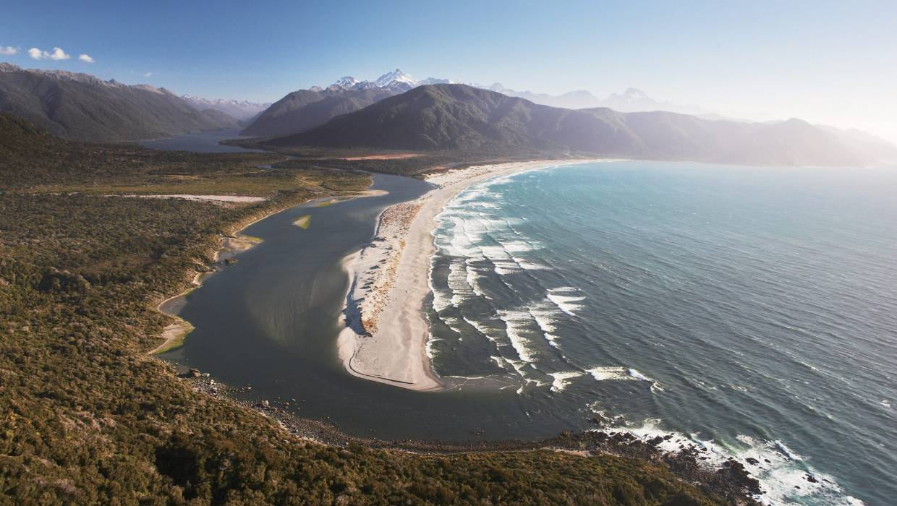

And again I see the long pouring headland,
And smoking coast with the sea high on the rocks
The gulls flung from the sea, the dark wooded hills
Swarming with mist, and mist low on the sea.
And on the surf-loud beach the long spent hulks
The mats and splintered masts, the fires kindled
On the wet sand, and men moving between the fires
Standing or crouching with backs to the sea
Their heads finely shrunken to a skull, small
And delicate, with small black rounded beaks;
Their antique bird-like chatter bringing to mind
Wild locusts, bees and trees filled with wild honey—
And, sweet as incense-clouds, the smoke rising, the fire
Spitting with rain, and mist low with rain—
Their great eyes glowing, their rain-jewelled, leaf-green
Bodies leaning and talking with the sea behind them,
Plant gods, tree gods, gods of the middle world ..... Face downward
And in a small creek mouth all unperceived,
The drowned Dionysus, sand in his eyes and mouth.
In the dim tide lolling—beautiful, and with the last harsh
Glare of divinity from lip and broad brow ebbing....
The long-awaited! And the gulls passing over with shrill cries;
And the fires going out on the thundering sand;
And the mist, and the mist moving over the land
I think of this as a poem about a New Zealand beach. Beaches are utterly central to the Kiwi world view: New Zealand is an Island civilisation, and when we stand on a beach we know not only that it is a thing of great beauty (New Zealand is full of beauty, after all—that is a given) but we know also that the rest of the world lies beyond it, not across any land border. Beaches represent not only where we pick up shells—like Newton—but are places whence we espy the Great Ocean of Truth that lies beyond(*). The pre-contact Maori knew, too, that there was a world beyond them that they wished to come to know, and their Pakeha stepchildren live under the same challenge: that is why New Zealanders are the world's greatest travellers.
Perhaps one day someone will tell me what this poem means....
|  |
Click here for next week's poem
Click here for last week's poem